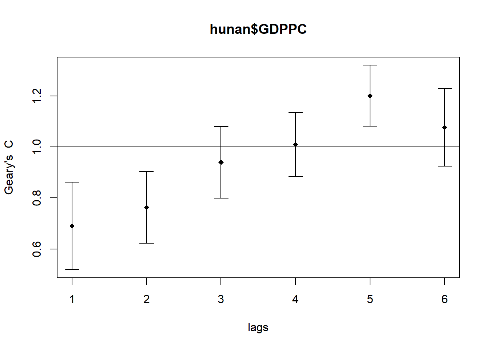

pacman::p_load(sf, tidyverse, spdep, tmap)Hands-On Exercise 5: Global Measures of Spatial Autocorrelation
1 Overview
In this hands-on exercise, we will be computing Global and Local Measure of Spatial Autocorrelation (GLSA) using the spdep package.
2 Setup
2.1 Understanding The Context
In spatial policy, one of the main development objective of the local government and planners is to ensure equal distribution of development in the province. Our task in this study is to apply appropriate spatial statistical methods to discover if developments are evenly distributed geographically.
If the answer is No. Then we need to check if there are signs of spatial clustering and where are they.
2.2 Study Area and Data
| Type | Name | Format | Description |
|---|---|---|---|
| Geospatial | Hunan Province Administrative Boundary | .shp | Data is at the County level. |
| Aspatial | Hunan_2012 | .xlsx | Selected Hunan’s local development indicators in 2012. |
2.3 Packages used
sf - used for importing and handling geospatial data in R
tidyverse - mainly used for wrangling attribute data in R
spdep - to compute spatial weights, global and local spatial autocorrelation statistics
tmap - to prepare cartographic quality chropleth map
3 Importing Geospatial Data
hunan <- st_read(dsn = "data/geospatial",
layer = "Hunan")Reading layer `Hunan' from data source
`C:\guga-nesh\IS415-GAA\hands-on_ex\hands-on_ex05\data\geospatial'
using driver `ESRI Shapefile'
Simple feature collection with 88 features and 7 fields
Geometry type: POLYGON
Dimension: XY
Bounding box: xmin: 108.7831 ymin: 24.6342 xmax: 114.2544 ymax: 30.12812
Geodetic CRS: WGS 84
Note
st_read() of sf package is used to import shapefile into R as a simple features object. Please refer to the documentation here.
4 Importing Aspatial Data
hunan2012 <- read_csv("data/aspatial/Hunan_2012.csv")5 Data Wrangling
5.1 Performing relational join
hunan <- left_join(hunan,hunan2012) %>%
select(1:4, 7, 15)
# auto takes the columns that exist in both objects
Note
The above code chunk will be used to update the attribute table of hunan’s SpatialPolygonsDataFrame with the attribute field of hunan2012 dataframe. This is performed by using left_join() of dplyr package.
6 Basic ESDA
6.1 Visualising Regional Development Indicator
We will prepare a basemap and a choropleth map showing the distribution of GDPPC 2012 by using qtm() of tmap package.
equal <- tm_shape(hunan) +
tm_fill("GDPPC",
n = 5,
style = "equal") +
tm_borders(alpha = 0.5) +
tm_layout(main.title = "Equal interval classification")
quantile <- tm_shape(hunan) +
tm_fill("GDPPC",
n = 5,
style = "quantile") +
tm_borders(alpha = 0.5) +
tm_layout(main.title = "Equal quantile classification")
tmap_arrange(equal,
quantile,
asp=1,
ncol=2)
7 Global Spatial Autocorrelation
In this section, we will compute the global spatial autocorrelation statistics and to perform spatial complete randomness test for global spatial autocorrelation.
7.1 Computing Contiguity Spatial Weights
Before we can compute the global spatial autocorrelation statistics, we need to construct the spatial weights of the study area (to define the neighbourhood relationships between the counties in the study area).
cw_queen <- poly2nb(hunan,
queen=TRUE)
summary(cw_queen)Neighbour list object:
Number of regions: 88
Number of nonzero links: 448
Percentage nonzero weights: 5.785124
Average number of links: 5.090909
Link number distribution:
1 2 3 4 5 6 7 8 9 11
2 2 12 16 24 14 11 4 2 1
2 least connected regions:
30 65 with 1 link
1 most connected region:
85 with 11 links
Note
poly2nb() of spdep package is used to compute contiguity weight matrices for the study area by building a neighbours list based on regions with contiguous boundaries using Queen’s method. Please refer to the documentation here.
The summary report shows that there are 88 area units in Hunan. The most connected area unit has 11 neighbours while there are two least connected area units with only 1 neighbour.
7.2 Row-standardised weights matrix
Next, we need to assign weights to each neighbouring polygon. In our case each neighbour will be assigned equal weight (i.e., style = "W"). This is accomplished by assigning (1/# of neighbours) to each neighbouring county then summing the weighted income values. One drawback is that the polygons along the edge of the study area will base their lagged values on fewer polygons thus potentially over- or under-estimating the true nature of the spatial autocorrelation in the data.
style = "B" is a more robust option. Others are available as well…
rswm_queen <- nb2listw(cw_queen,
style = "W",
zero.policy = TRUE)
rswm_queenCharacteristics of weights list object:
Neighbour list object:
Number of regions: 88
Number of nonzero links: 448
Percentage nonzero weights: 5.785124
Average number of links: 5.090909
Weights style: W
Weights constants summary:
n nn S0 S1 S2
W 88 7744 88 37.86334 365.9147
Note
Input of nb2list2() must be an object of class nb.
stylecan take values “W”, “B”. “C”, “U”, “minmax”, and “S”. (Refer to in-class_ex06)If
zero.policyis set toTRUE, weight vectors of zero length are inserted for regions without neighbour in the neighbours list. This will generate lag values of zero…
7.3 Global Spatial Autocorrelation: Moran’s I
moran.test(hunan$GDPPC,
listw=rswm_queen,
zero.policy = TRUE,
na.action=na.omit)
Moran I test under randomisation
data: hunan$GDPPC
weights: rswm_queen
Moran I statistic standard deviate = 4.7351, p-value = 1.095e-06
alternative hypothesis: greater
sample estimates:
Moran I statistic Expectation Variance
0.300749970 -0.011494253 0.004348351
Note
use moran.test() of spdep to perform Moran’s I statistical testing. Please refer to the documentation here.
Note
Question: What statistical conclusion can you draw from the output above?
The Moran’s I statistic is 0.30074990 which is close to 0. Hence, we can deduce that the observations are arranged randomly over the study area.
7.3.1 Computing Monte Carlo Moran’s I
set.seed(1234)
bperm= moran.mc(hunan$GDPPC,
listw=rswm_queen,
nsim=999,
zero.policy = TRUE,
na.action=na.omit)
bperm
Monte-Carlo simulation of Moran I
data: hunan$GDPPC
weights: rswm_queen
number of simulations + 1: 1000
statistic = 0.30075, observed rank = 1000, p-value = 0.001
alternative hypothesis: greater
Note
You can perform permutation test for Moran’s I statistic by using moran.mc() of spdep. A total of 100 simulations were performed. Please refer to the documentation here.
Note
Question: What statistical conclusion can you draw from the output above?
7.3.2 Visualising Monte Carlo Moran’s I
It is always good practice for us to examine the simulated Moran’s I test statistics in greater detail. This can be achieved by plotting the distribution of the statistical values as a histogram.
mean(bperm$res[1:999])[1] -0.01504572var(bperm$res[1:999])[1] 0.004371574summary(bperm$res[1:999]) Min. 1st Qu. Median Mean 3rd Qu. Max.
-0.18339 -0.06168 -0.02125 -0.01505 0.02611 0.27593 hist(bperm$res,
freq=TRUE,
breaks=20,
xlab="Simulated Moran's I")
abline(v=0,
col="red") 
Note
Note
Question: What statistical observation can you draw from the output above?
Note
Challenge: Instead of using Base Graph to plot the values, plot the values by using ggplot2 package.
# code here:7.4 Global Spatial Autocorrelation: Geary’s
7.4.1 Geary’s C Test
geary.test(hunan$GDPPC, listw=rswm_queen)
Geary C test under randomisation
data: hunan$GDPPC
weights: rswm_queen
Geary C statistic standard deviate = 3.6108, p-value = 0.0001526
alternative hypothesis: Expectation greater than statistic
sample estimates:
Geary C statistic Expectation Variance
0.6907223 1.0000000 0.0073364
Note
use geary.test() of spdep to perform Geary’s C test for spatial autocorrelation.
Note
Question: What statistical conclusion can you draw from the output above?
7.4.2 Computing Monte Carlo Geary’s C
set.seed(1234)
bperm=geary.mc(hunan$GDPPC,
listw=rswm_queen,
nsim=999)
bperm
Monte-Carlo simulation of Geary C
data: hunan$GDPPC
weights: rswm_queen
number of simulations + 1: 1000
statistic = 0.69072, observed rank = 1, p-value = 0.001
alternative hypothesis: greater
Note
Perform Geary's C test for spatial autocorrelation by using geary.test() of spdep. Please refer to the documentation here.
Note
Question: What statistical conclusion can you draw from the output above?
7.4.3 Visualising the Monte Carlo Geary’s C
mean(bperm$res[1:999])[1] 1.004402var(bperm$res[1:999])[1] 0.007436493summary(bperm$res[1:999]) Min. 1st Qu. Median Mean 3rd Qu. Max.
0.7142 0.9502 1.0052 1.0044 1.0595 1.2722 hist(bperm$res, freq=TRUE, breaks=20, xlab="Simulated Geary c")
abline(v=1, col="red") 
8 Spatial Correlogram
Spatial Correlograms are useful in examining patterns of spatial autocorrelation in your data or model residuals. They show how correlated pairs of spatial observations are as you increase the distance (i.e., lag) between them. But… they are not as fundamental as variogramsbut are useful as an exploratory and descriptive tool. For this purpose they actually provide richer information than variograms.
8.1 Compute Moran I’s correlogram
MI_corr <- sp.correlogram(cw_queen,
hunan$GDPPC,
order=6,
method="I",
style="W")
plot(MI_corr)
Note
We have used sp_correlogram() of spdep package to compute a 6-lag spatial correlogram of GDPPC. The global spatial autocorrelation used is Moran’s I. The plot() of base Graph is used to plot the output.
print(MI_corr)Spatial correlogram for hunan$GDPPC
method: Moran's I
estimate expectation variance standard deviate Pr(I) two sided
1 (88) 0.3007500 -0.0114943 0.0043484 4.7351 2.189e-06 ***
2 (88) 0.2060084 -0.0114943 0.0020962 4.7505 2.029e-06 ***
3 (88) 0.0668273 -0.0114943 0.0014602 2.0496 0.040400 *
4 (88) 0.0299470 -0.0114943 0.0011717 1.2107 0.226015
5 (88) -0.1530471 -0.0114943 0.0012440 -4.0134 5.984e-05 ***
6 (88) -0.1187070 -0.0114943 0.0016791 -2.6164 0.008886 **
---
Signif. codes: 0 '***' 0.001 '**' 0.01 '*' 0.05 '.' 0.1 ' ' 1Important to fully print out the analysis results as not all autocorrelation values are statistically significant.
Note
Question: What statistical observation can you draw from the plot above?
8.2 Compute Geary’s C correlogram and plot
GC_corr <- sp.correlogram(cw_queen,
hunan$GDPPC,
order=6,
method="C",
style="W")
plot(GC_corr)
print(GC_corr)Spatial correlogram for hunan$GDPPC
method: Geary's C
estimate expectation variance standard deviate Pr(I) two sided
1 (88) 0.6907223 1.0000000 0.0073364 -3.6108 0.0003052 ***
2 (88) 0.7630197 1.0000000 0.0049126 -3.3811 0.0007220 ***
3 (88) 0.9397299 1.0000000 0.0049005 -0.8610 0.3892612
4 (88) 1.0098462 1.0000000 0.0039631 0.1564 0.8757128
5 (88) 1.2008204 1.0000000 0.0035568 3.3673 0.0007592 ***
6 (88) 1.0773386 1.0000000 0.0058042 1.0151 0.3100407
---
Signif. codes: 0 '***' 0.001 '**' 0.01 '*' 0.05 '.' 0.1 ' ' 1